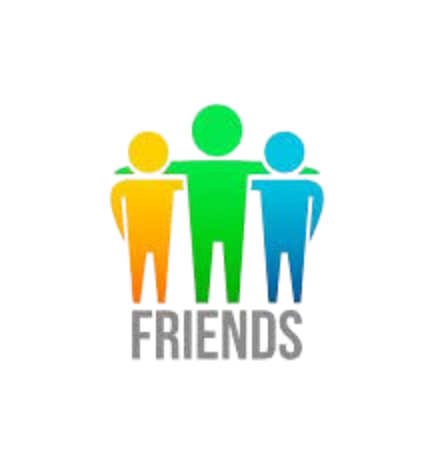

Üdv az All-in Harmony oldalán!
Te is diák vagy és imádsz játszani? Itt a helyed! Tippek, trükkök és közösség a gaminghez.
Fedezd fel a játékokat!Miért érdemes velünk tartanod?
Diákoknak szólva
Tippjeink, közösségünk esetleg segíthet valakinek nyitni a világ felé

Barátságos közösség
Ismerj meg más diákokat, akiknek az érdeklődési köre megegyezik a tiéddel, vagy éppen ellentétes fedezd fel új perspektívákat.
Friss tartalom
Heti rendszerességgel jelentkezünk új játékajánlókkal és friss tippekkel.